|
|
THE FOLLOWING LOCATIONS HAVE BEEN FOUND
PAGE 000
THE AVENGERS: The Bird Who Knew Too Much (Roy Rossotti: October
1966)
The former UK Atomic Energy Authority site at
Winfrith in Dorset - The location shown in the stolen
photograph.
Identified by Andrew Chilcott, 11th August 2013)

THE AVENGERS: What the Butler Saw
(Bill Bain: December 1965)
N60: Champions House, Green Street - Mrs Peel takes Steed to the headquarters of the Butlers and Gentleman’s
Gentleman Association.
(Idenified by Stephen Winterbottom, June 2015)


THE AVENGERS:
The Danger Makers (Charles Crichton: November 1965)
East Wing, St. Thomas’ Hospital, Lamberth, SE1
- Gordon Lamble, head of the Chemical
Warfare Establishment, climbs out of the hospital window, stands on the ledge
and looks at the view.
(Identified by Geodd Dodd, October 2013)
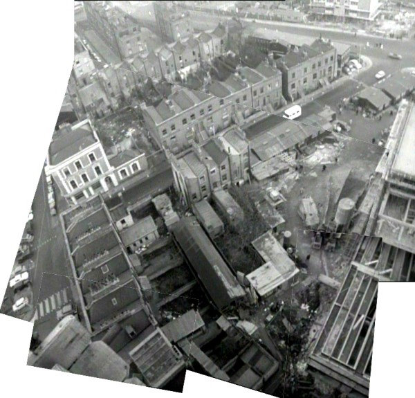
RANDALL AND HOPKIRK [DECEASED]: Money
to Burn (Ray
Austin: January 1969)

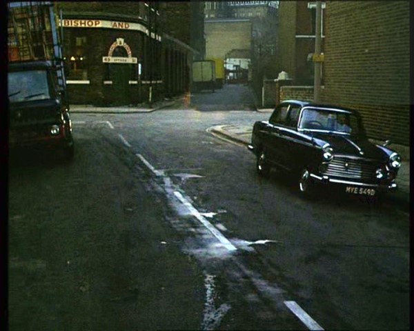

RANDALL AND HOPKIRK [DECEASED]:The
Trouble with Women
(Cyril Frankel: October 1968)
Harley Street, W1 - Jeff and Marty park opposite
Raebarn House to observe Lang and his mistress. They both duck down inside the
Mini to hide from Lang (93 Harley Street can be seen through the window of the
Mini).

RANDALL AND HOPKIRK [DECEASED]: But What a Sweet
Little Room (Roy
Ward Baker: June 1968)
P1: Grim's Dyke Hotel, Old
(Confirmed by Vince Cox, November 20th 2012)
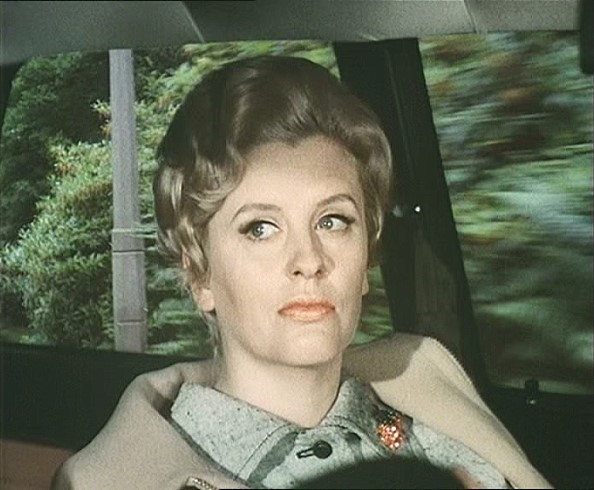
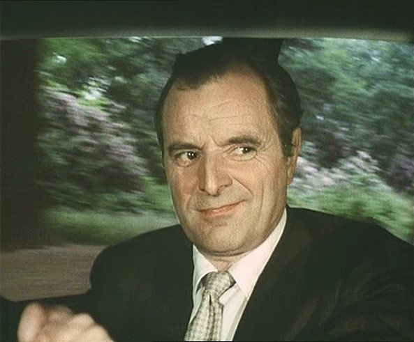
RANDALL AND HOPKIRK [DECEASED]: The House on Haunted Hill (Ray Austin: April 1969)
(Idenitfied by Rhett Burns, 1st October 4, 2012)
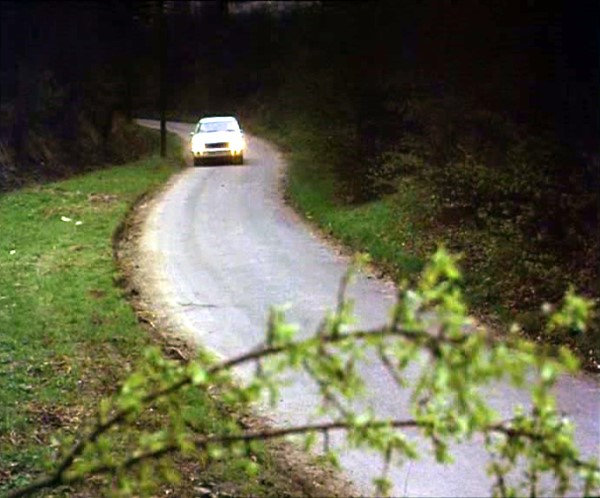
RANDALL AND HOPKIRK [DECEASED]: Just for the
Anhalt Road

GIDEON’S WAY: The Tin God (John Gilling: June/July 1964)
(Identified by Geoff Dodd, November 18th, 2009)
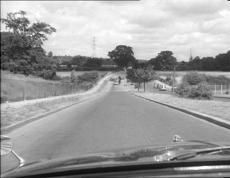
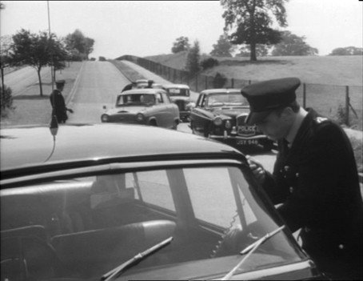
THE SAINT: The Man Who Could not Die (Roger Moore, May 1965)
Unknown 10: When Simon Templar
and Moyna
Stanford arrive at Chelsea Warf to look for the blackmailer, they find the
police investigating a crime.
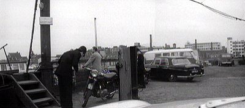
H. G. WELLS' INVISIBLE MAN: Flight Into Darkness (Peter Maxwell: 1959)
Emperor's Gate, SW7 - Wilson
and Sewell arrive at the flat where Doctor Stephens is hiding, number
(Identified by Remy, on the Britmovie
Forum, 15th February 2009)
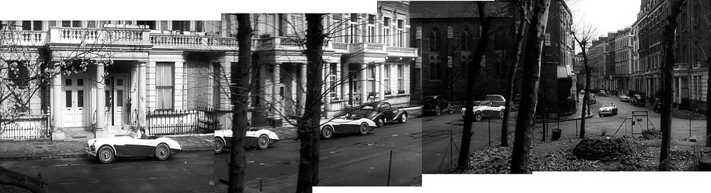
H. G. WELLS' INVISIBLE MAN: Flight Into Darkness (Peter Maxwell: 1959)
Launceston Place/Cornwall Gardens SW7
- The Invisible Man drives to
(Identified by Remy, on the Britmovie
Forum, 15th February 2009)
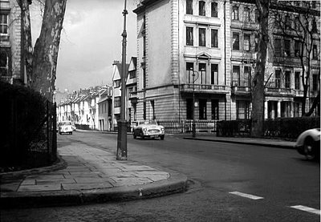
THE SAINT: The Man Who Liked Toys (John Gilling:
June 1964)
Southwick Mews, W2
- The Saint George Fowler (Maurice Kaufmann) in his Volvo to a garage where the
money to fund the strike is being passed over. After Fowler leaves, Simon
enters.
(Identified by Geoff Dodd, October 2009)
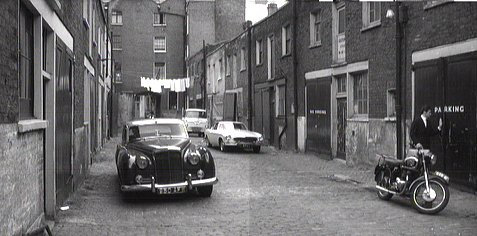
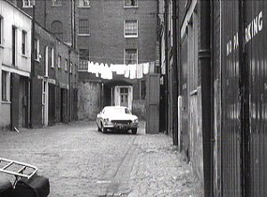
THE BARON: Enemy of the State
Taken from the number 16 Ilica looking west - A British agent is picked up by the secret police
in
(Confirmation that this is
(photo: Davor Djurinic, May 11th,
2010)
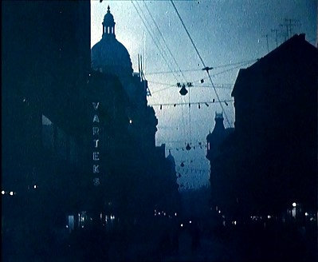

THE BARON: Enemy of the State
Corner of TrgkraljaTomislava and Trg Ante Starčevića, looking north - A British agent is picked up by the secret
police in Eastern Europe
(Confirmation that this is
(photo: Davor Djurinic, March 2nd,
2010)
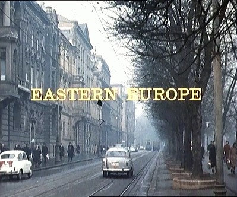

THE BARON: Enemy of
the State
The corner of Trg Ante Starčevića and TrgkraljaTomislava, looking west - A British agent is picked up by the secret
police in
(Confirmation that this is
(photo: Davor Djurinic, March 2nd,
2010)
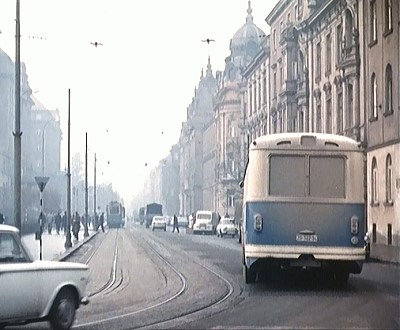

MAN IN A SUITCASE: Somebody Loses...Somebody Wins (John Glen: April
1967)
(Identified by Greg Mishevski,
aka SainT
on the Britmovie Forum February 22nd,
2010)
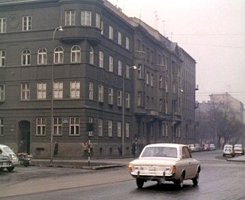
DANGER MAN: The Paper Chase (Patrick McGoohan: 1966)
Bulkeley House, Middle Hill, Englefield Green, Surrey-
Acting on a tip off from Eddie Gelb John Drake (Patrick McGoohan) goes to 56 Rio Vitino, the home of Sinorina Nandin’s house
looking for the “Big Man”. He recognises the man from his description and makes
a note of the location of his room. Later he returns posing as a man needing
sanctuary and is met by Canesi
(Sandor Eles) at the door.
(Identified by Greg Mishevski,
aka SainT on
the Britmovie Forum)
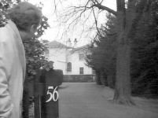
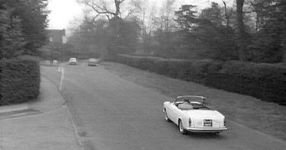
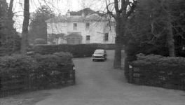
DANGER MAN: The Mirror's New (Michael Truman: 1964)
Q29: Garrick Court, Green Lane, Edgware
- Drake and Esser
follow Edward Bierce to the flat of Penny where he make a call to hi wife from
a nearby telephone box before entering. The following morning Bierce leaves and
Drake enters.
(Identified by Greg Mishevski,
aka SainT, and
Mark O on the Britmovie Forum)
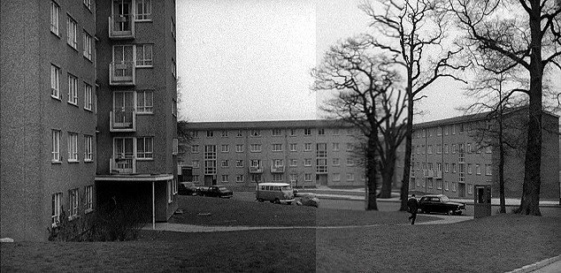
DANGER MAN: A Room in the Basement (Don Chaffey: 1964)
Wadham Gardens NW3 - East German Embassy,
(Identified by Remy,
on the Britmovie Forum)
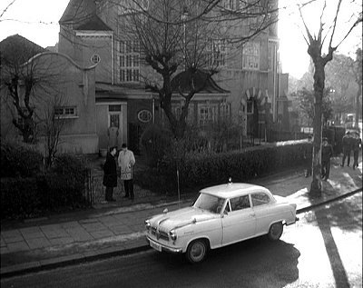
DANGER MAN: Fish on a Hook (Robert Day: March 1964)
The Nile Hilton Hotel, Corniche El Nil,

Chiswick House,
(Identified by Chris Mac, of the Britmovie Forum, November 2010)
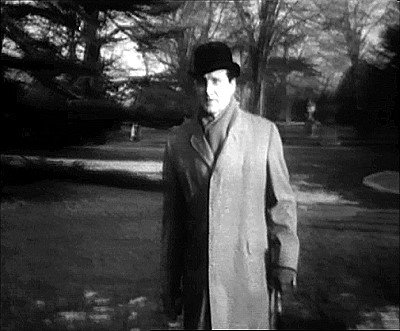
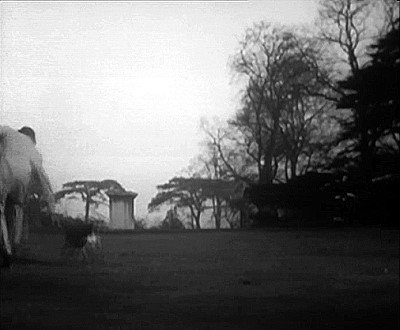
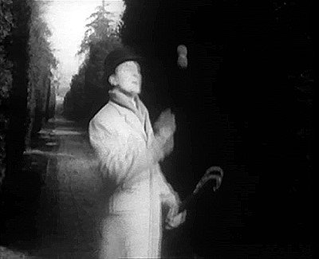
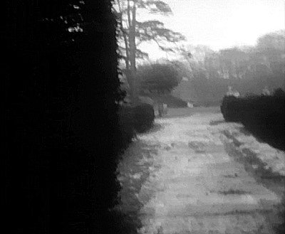
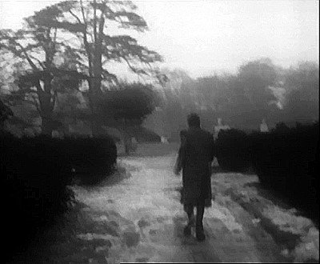
THE AVENGERS:
N35: Tykes Water Lake, Bridge and approach road, Aldenham Park -
Tara King (Linda Thorson) waits in her AC Cobra for Lord Barnes who is arriving
by Hughes 269B helicopter.
(confirmed
by cross reference with You Have Just
Been Murdered.)

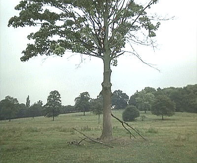

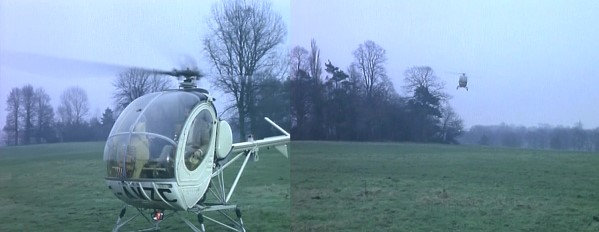
Also see in:
THE AVENGERS: Super Secret Cypher Snatch (John Hough: June 1968)
Mother sets up his mobile HQ in a field with the help of Rhonda.
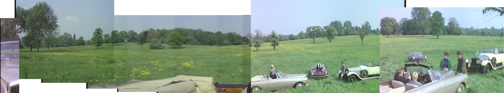
And
THE AVENGERS: Thingumajig (Leslie
Norman: January 1969)
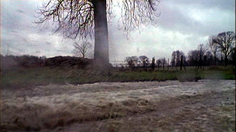
(Identified by Matthew Hart, April 2010)
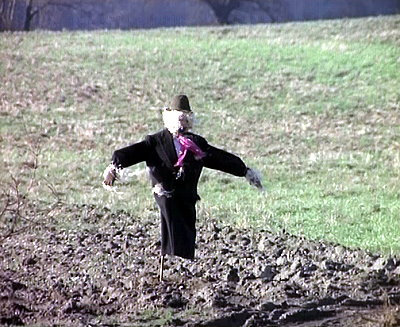 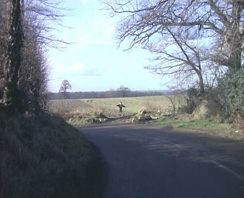

THE AVENGERS: The Interrogators (Charles Crichton: October 1968)
N35:

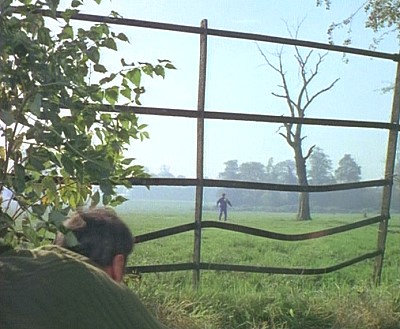
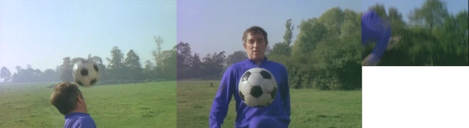
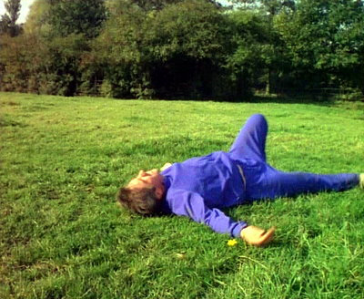
 This looks
like the
This looks
like the
Hampstead Heath:
Tara King (Linda Thorson) arrives to collect Fillington, who is there to practice
football, but finds that he has already been eliminated. Later
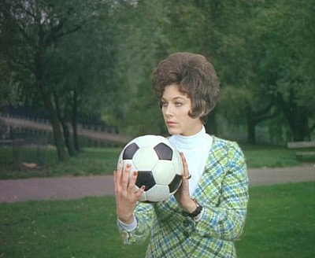
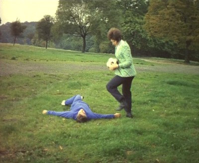
JOURNEY TO THE UNKNOWN: The Madison Equation (Rex Firkin: 1968)
(Identified by Geoff Dodd, May 2010)
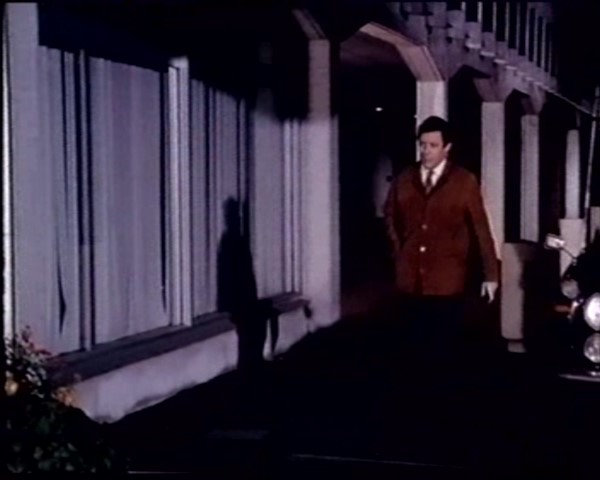


GIDEON’S WAY: Fall High, Fall Hard (Leslie Norman, November
1964)
Moorgate EC2, looking west along
(Identified by Alan Field, November 5th 2009)

Queen Street EC4 –
(Identified by Alan Field, November 5th 2009)
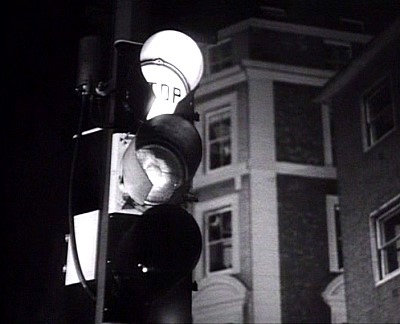
Looking east along
(Identified by Alan Field, November 5th 2009)
It’s while waiting at these traffic lights
that Gordon Jackson gets shot in The Ipcress File
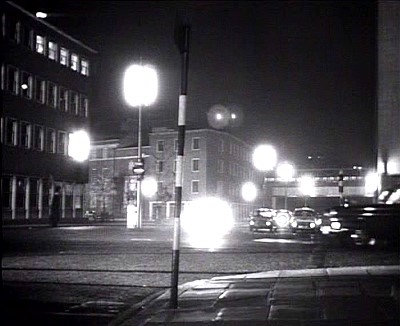
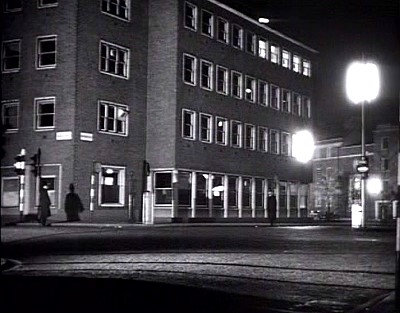
GIDEON’S WAY: The Wall (Leslie Norman, January 1965)
(Identified by Alan Field, November 5th 2009)

THE BARON: Enemy of the State (Jeremy Summers: December 1965)
(Confirmation that this is
This picture is taken from the corner of Trg kralja Tomislava and Trg Ante Starčevića, looking north.
The corner of Trg Ante Starčevića and TrgkraljaTomislava, looking west.
This picture is taken from the number 16 Ilica, looking west. The Varteks shop is still there on number 17 Ilica.
DEPARTMENT S: Les Fleurs
du Mal (Cyril Frankel: Early 1969)
R13:
(Identified by Geoff Dodd, July 2010)


DEPARTMENT S: Dead Men Die Twice (Ray Austin: 1968)
St Paul de Vence, Provence-Alpes-Côte d'Azur,
(Identified by Paul Stroud, May 2010)

B20:
U.F.O.: Flight
Path
Paul Roper (George Cole) arrives home in his bronze S.H.A.D.O. car to find
Carol (Sonia Fox), his Wife, has been visited by a dangerous intruder. Some
nights later the Ropers arrive home after a night out. As Paul puts his car
away he takes the opportunity to pass on the information requested of him.
(Spotted by Sam Denham, April 2010)
U.F.O.: The
Responsibility Seat (Alan Perry: September 1969)
Straker
arrives home late at night with Jo Fraser.
(Spotted by Sam Denham, April 2010)
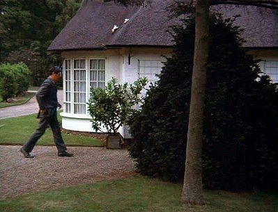
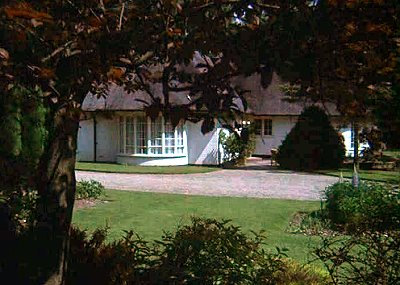

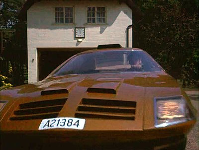
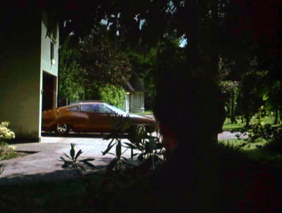
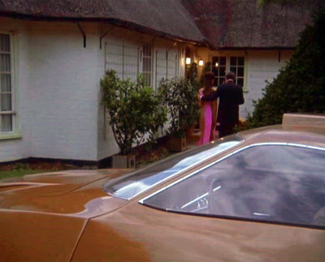
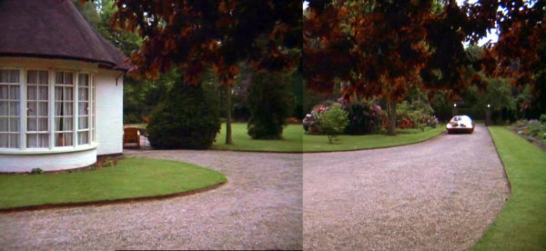
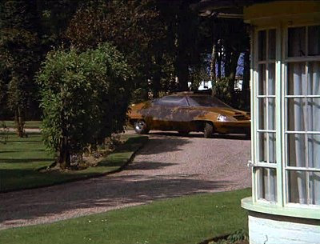
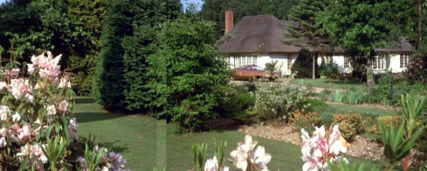
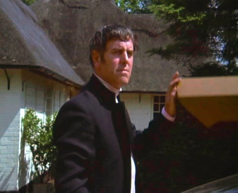
DEPARTMENT S: Six Days (Cyril Frankel: July 1968)
Lennox Gardens, SW3 –Annabelle
and Jason wait outside Howard Walsham’s
flat (No.38) in Jason’s Bentley. Annabelle goes to search flat after Walsham leaves with Durrres. After
Annabelle leaves, Jason tries his own method of obtaining information.
Unfortunately, Howard arrives and interrupts his interrogation.
(Identified by Alan Field, March 2010)

(Identified by Alan Field, March 2010)
(Identified by Alan Field, March 2010)
(Identified by Alan Field, March 2010)

DEPARTMENT S: The Shift That Never Was (John Gilling: Autumn 1968)
R13:
(Identified by Geoff Dodd, July 2010)

R13:
(Identified by Geoff Dodd, July 2010)

DEPARTMENT S: Who Plays the Dummy? (John Gilling: Autumn 1968)
Hendon aerodrome - Stewart Sullivan goes to the race track where
Gilford is testing his racing cars to ask about remote control systems. Whilst
he is there Jason King drives up in one of the cars.
 5th December - Andrew Chilcott "Hendon aerodrome,
completely built over from 1973 onwards with the Grahame Park Estate. I say
this because to the right there is a railway embankment which I believe is the
St. Pancras-Derby Midland Main Line, and on the middle horizon there are link
houses that look like the back of the LCC Watling Estate at
5th December - Andrew Chilcott "Hendon aerodrome,
completely built over from 1973 onwards with the Grahame Park Estate. I say
this because to the right there is a railway embankment which I believe is the
St. Pancras-Derby Midland Main Line, and on the middle horizon there are link
houses that look like the back of the LCC Watling Estate at
DEPARTMENT S: The Double Death of Charlie Crippen (John Gilling: Autumn 1968)
St Paul de Vence, Provence-Alpes-Côte d'Azur, France - Stewart Sullivan drives through the countryside near
Naples to interview the farmer who first discovered the wreck of Charlie Crippen’s car.
(Identified by Paul Stroud, May 2010)
Piazza
Nicola Amore - Jason King goes to
a
(identified by
Paul Stroud).
Think you know a spot? Need a bigger image? Email me.
< Previous | Index | Avengerland | Next >
Copyright © 2003 Anthony R. McKay